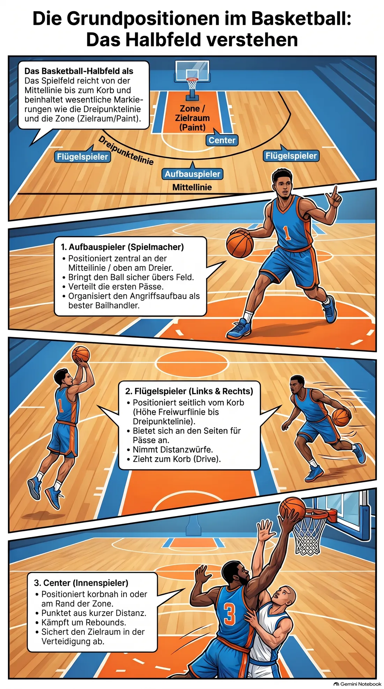
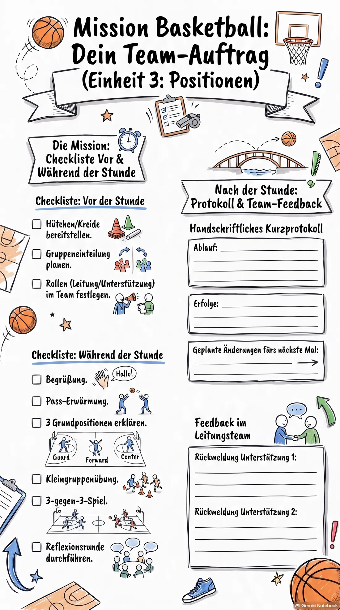

Einsatz 03 · 04 Positionen der Spieler auf dem Feld
Ihr seid heute das Team für die dritte Stunde der Reihe: die Grundpositionen auf dem Feld. Lest diese Akte vorher einmal in Ruhe durch, am besten gemeinsam im Team.
Ablaufplan (60 Minuten)
-
0–5
Begrüßung
Ziel nennen: „Heute lernt ihr, welche Position wo auf dem Feld steht und was sie macht.“
-
5–15
Erwärmung
Lockeres Passspiel im Kreis, dabei schon mal Positionsnamen einstreuen.
-
15–30
Hauptteil A: Positionen erklären
Drei Grundpositionen vorstellen: Aufbauspieler (ballnah, organisiert), Flügelspieler (Distanzwürfe, Dribbling), Center (Korbnähe, Rebounds).
Mit Kreide oder Hütchen die Positionen auf dem Feld markieren. -
30–45
Hauptteil B: Positionsübung
In Kleingruppen je eine Position durchspielen: Aufbauspieler bekommt Pass-Übung, Center bekommt Rebound-Übung.
Gruppen fest einteilen, Rollen nach der Hälfte tauschen. -
45–55
Anwendung
3 gegen 3 mit festen Positionen, jeder bleibt auf seinem Platz.
Auf Einhaltung der Position achten, nicht auf Tore. -
55–60
Abschluss
Reflexion: „Welche Position hat euch am meisten Spaß gemacht?“
Beweisfoto: die Positionen im Bild

So bereitet ihr euch vor
Ihr müsst die drei Grundpositionen erklären und zeigen können:
- Aufbauspieler: Startposition meist zentral an der Mittellinie, organisiert den Angriffsaufbau, meist bester Ballhandler.
- Flügelspieler: Position seitlich vom Korb, etwa auf Höhe der Freiwurflinie bis Dreipunktelinie, Distanzwürfe und Drives zum Korb.
- Center: Position korbnah, in oder am Rand der Zone, zuständig für Rebounds und Würfe aus kurzer Distanz.
Ihr müsst nicht alle fünf klassischen Positionen erklären, drei reichen für den Einstieg völlig aus. Nehmt Hütchen oder Kreide mit, um die Positionen auf dem Feld sichtbar zu markieren, und überlegt euch die Gruppeneinteilung schon vorher.
Zeigt die Positionen zuerst an einem stehenden Beispiel, dann erst in Bewegung. Viele Achtklässler laufen instinktiv alle zum Ball — genau das soll die Übung durchbrechen, sprecht das vorher klar an.
Vor der Gruppe stehen — kurz und knapp
Verhaltenskodex
- Stellt euch in einen Halbkreis, sodass ihr alle acht im Blick habt, niemand hinter euch.
- Sprecht lauter und langsamer als sonst, aus dem Bauch heraus, eine Anweisung nach der anderen.
- Legt vorher ein festes Signal fest (z. B. Pfeife einmal = alle hören auf), und wartet danach wirklich, bis es ruhig ist.
- Bei Störungen: ruhig bleiben, die Person direkt und kurz ansprechen, mit Namen und Blickkontakt. Keine lange Diskussion vor der Gruppe.
- Bei größeren Problemen nicht allein durchkämpfen — holt euch Unterstützung aus eurem Team oder sprecht die Sportlehrkraft an.
- Lob nicht vergessen, wenn etwas gut klappt — das wirkt oft mehr als jede Ermahnung.
Euer Checklisten-Auftrag
